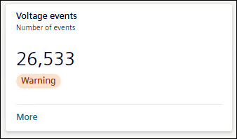
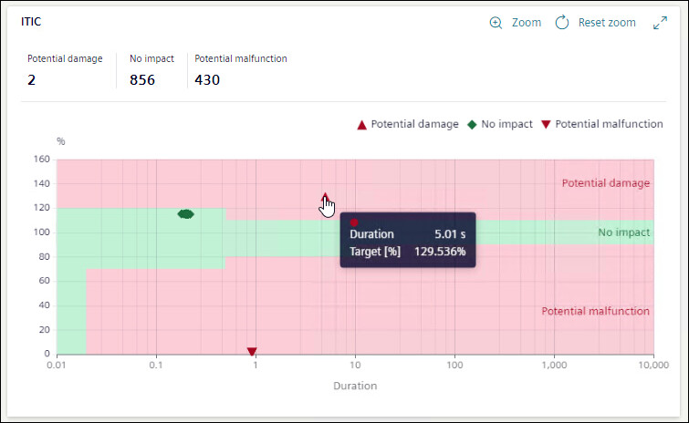
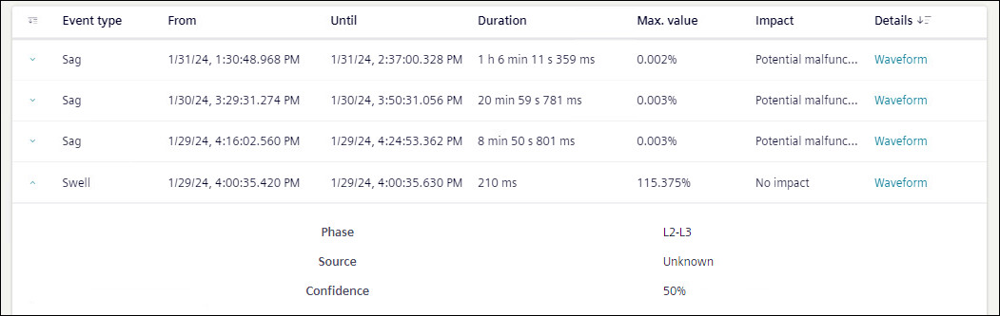

Voltage events

A voltage event refers to a power-system disturbance like a voltage dip, swell, or an interruption that affects the operation of the equipment.
Voltage events tile shows the number of events occurred over the selected timeline. The tile shows the status of voltage events as All Ok, or Warning. If there is any voltage event, card will show the status as Warning.
To view further details of Voltage events, click More.
Details for Voltage events are shown in the form of graph, doughnut chart, and table.

The ITI CBEMA curve displayed is a performance curve diagram of the voltage at the measuring point of the equipment versus the duration of the voltage event.
The impact of an event on the equipment is broadly classified as No impact, Potential damage, and Potential malfunction based on the position of the event on the ITI CBEMA curve.
For Voltage events graph, X-axis shows duration in seconds and Y-axis shows operation value in percentage.

A doughnut chart shows the percentage of the voltage events for available sources. Hover mouse on any of source to know the number of events caused due to that source.
Upstream: The voltage event occurred due to conditions outside the system relative to the measuring point.
Downstream: The voltage event occurred due to conditions inside the system relative to the measuring point.
Both: The direction of the voltage event is internal on one phase and external on another phase.
Unknown: The direction of the voltage event cannot be determined by the system either because the device does not support the measurement of the voltage direction or because the system was not stable enough to make an accurate measurement of the direction.

Voltage events list shows the details of the voltage events occurred in tabular format. This table can be sorted by any of the headings of the table. Table can be filtered based on Event Type, From, and Until.
Event type: Shows if event was sag, swell, or interruption event.
From: Shows date and time when event started.
Until: Shows date and time when event stopped.
Duration: Shows duration of time event lasted.
Max Value: Shows the maximum value for swell and minimum value for sag.
Impact: Shows the impact of the event.
Details: Shows the waveform if available. To view waveforms for an event, click on Waveform.
Waveform: Displays the Event Summary and waveform chart for the selected voltage event.
- Value: Displays the value either Primary or Secondary based on the device configuration.
- Channels: Specify the channels such as voltage, current, and binary from the drop-down. Based on the selection, multiple channels are combined and displayed in a single waveform with overlay information for each curve plot when the cursor is hovered over it. For a binary channel, a separate chart is displayed below the main waveform.
The horizontal scroll bar at the bottom of the waveform allows you to move the viewing area to the left and right.
- Display Mode: Specify the mode for the waveform chart. By default, waveforms are displayed for the Instantaneous value and an another options RMS is available.
Event Summary: Displays the details such as Stations, Sample Rate, From, Value, and Record Type.
Waveform: Displays the waveform chart for the selected channels and display mode. The pointer is available in the chart to mark the value for the phasor and harmonics representation. Hover over the chart to view the value at the point.
NOTE 1: To view waveforms in flex client, ensure voltage waveforms are enabled in the device.
NOTE 2: To view waveforms in flex client, waveform trigger time and voltage event start time should not deviate more than 11ms.

If voltage event duration is larger than PQDiff file generation interval, the duration shown in flex client for that event might not be correct.
The Phasor and Harmonics details for the selected channels are displayed below the waveform chart. Moving the pointer in the waveform displays the corresponding phasor and harmonics values accordingly.
Further more information on any event is also available.
- Phase: Shows between which phase event has occurred.
- Source: Shows the source (upstream, downstream, or both) of event if known.
- Confidence: Shows the percentage confidence on source of event.
Phasor
The Phasor chart displays the vectorial representation of voltage and current, providing the fundamental magnitude and phase-angle values. The table shows the corresponding values for the phases in the phasor chart. The fundamental magnitude for voltage and current is represented as V RMS and I RMS, respectively, while the phase-angle is represented as V.V for voltage and V.I current.
The vector representation on the phasor chart and its values vary based on the waveform pointer position. The pointer can be moved horizontally across the waveform.
Harmonic V and I
The Harmonics chart displays the harmonic values of voltage and current for the selected channels in the waveform. Separate charts are displayed for voltage and current accordingly. On the voltage harmonics chart, the X-axis represents the harmonics in increasing order, and the Y-axis represents the voltage in volts (V). Similarly, on the current harmonics chart, the X-axis represents the harmonics in increasing order, and the Y-axis represents the current in amperes (A).
The harmonic chart and its values vary based on the waveform pointer position, and the pointer can be moved horizontally across the waveform.